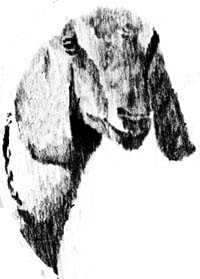

Greta The Goat
September/October 1976
by PHYLLIS HOBSON
Glamorous Greta is a goat. She has languid brown eyes, two-inch-long eyelashes, and droopy, white-tipped ears that frame her face like Cleopatra's hairdo.
Greta is an aristocrat by birth. Her family background is far better than ours and she never misses an opportunity to remind us of the fact. She never begs to be petted ... she allows us to rub her head. When we call, she never comes running up the hill with the rest of the goats ... she ambles our way leisurely, as if by accident.
We bought Greta at our price-by default-because her dam was bred out of season. That made her an "only" kid and people who raise large herds of goats don't like to make all those long trips out to the barn just to feed one kid. But we didn't mind. We enjoyed the trips to the barn because we knew that each one took us just a little closer to the time when Greta would repay us with rich Nubian milk.
And she does. Greta now manufactures copious amounts of creamy milk. But she doesn't "give" it. Greta doesn't "give" anybody anything. She manufactures milk and the rest is up to you. If you want it, you must take it by force.
For despite her regal bloodlines and her aloof manner, Greta has one small flaw that makes milking her a twice-a-day struggle. Certain parts of her body are ticklish. Incredibly, ridiculously ticklish.
Greta will stand quietly with her Roman nose in the air and allow you to rub her ears. She'll even stretch in ecstasy as we scratch her neck. And she loves to have her back brushed. But one touch of the human hand anywhere on the underside of her body and she's off in kicking, yelping hysterics.
But I didn't know that until I first tried to milk her. Which would have been bad enough with an unticklish goat because, at the time, I had never milked one of the animals before and I was more concerned with the inadequacies of the milker than of the milkee.
Did you ever notice that there's no place close to your farm where you can go to learn to milk a goat? I began to notice that . . . right after we bought Greta.
There are schools which offer courses in sewing, radio repair, and how to make rugs out of scraps of cloth. There are training programs that will teach you to handle dogs and horses. There are books on building backyard barbecues. But if you want to learn to milk a goat, you're on your own. (Wrong, Phyllis. MOTHER NO, 15 carried explicit instructions - with diagrams - on how to milk a cow . . . which is exactly the same as milking a goat. - MOTHER.)
So, while Greta and I awaited the arrival of her firstborn, I checked the libraries, the bookstores, the magazine racks. I even searched through the goat publications. Every one assumed that I already knew how to milk.
I finally asked a nearby dairy farmer for lessons and he demonstrated his milking technique on a docile, cudchewing brown and white cow. She never moved a muscle as he, with what seemed effortless ease, guided a stream of milk into the pail.
It looked easy, so I sat down on the stool ... and suddenly realized, from that angle, that the cow was huge (by far the largest animal I had ever sat under). I gingerly took hold of two teats (ole Bossy stopped chewing her cud and turned to look at me). I squeezed (nothing happened). I squeezed again (I could feel milk being forced back up into the udder). Bossy's left leg jerked. I got up! "You just need some practice," said the farmer. "You won't have any trouble. Anyone can do it."
I wasn't as confident as my adviser ... so I searched through every book on goats that I could find. Each talked about sanitation, about the layout of the milking room, about whether or not to feed an animal during milking, about chilling and straining the milk. And each ended with a variation of the same theme: "Attach milking machine at this time."
Finally, in an ancient and very elementary volume (written for youngsters) about the care of a family cow, I found what I was looking for. It was only one small paragraph, but it was enough to get me started. "With reasonable pressure with the right hand," the book said, "squeeze in the second finger, then the third, and then the little finger. Relax and repeat the action with the left hand."
Now I at least knew what I was supposed to do ... but I had nothing to practice on. So-whenever I was alone and thought no one was looking-I wrapped my hands around the teats of an imaginary goat and squeezed ... second finger, third finger, little finger. First one hand and then the other. It became a reflex action.
And then the Great Day came. I went out one morning and there, in Greta's stall beside her, was the most beautiful little buck kid I had ever seen. His ears were long and spotted with white. His coat was like velvet. He had lashes that stood out an inch from his face and he loved to nuzzle chins. We had our herd sire. Besides that, It was time to milk Greta! Time to try out my newly learned skill!
Everything was ready . . . the freshly painted milking stand, the shiny new stainless steel milking pan, the spotless milk pail and its cover. I drew a container of warm water, picked up a cleaning cloth, and headed for the barn.
My favorite goat book had said, "The goat will eagerly jump up on the milking stand." But, apparently, Greta hadn't read the book. After fifteen minutes of coaxing, pushing, and finally-bodily lifting her, however, I did manage to get Greta up on that stand. Then I set a bowl of grain in front of her and watched as she cautiously inserted her head through the keyhole stanchion. Greta sniffed the grain suspiciously ... then took a bite.
This was more like it! I sat down on the milking stool, dipped my cloth in the warm water, and began to wash the goat's udder just as my book had instructed.
Yipes! One touch of my hands and Greta pulled her head back through the keyhole, jumped off the stand, and ran yelping down the aisle of the barn!
So I caught her, lugged her back, lifted her up on the stand again, and tied her securely so she couldn't jump down again. But she jumped off anyway, and pulled the milking stand over as she went.
By the time I had Greta on the stand for the third time, I had decided that milking a goat was definitely not a one-woman operation. So I brought in two assistants and stationed one at each end of the milking stand to hold Greta where I wanted her. (We were both trembling with frustration by this time.) Then I sat down, pail in hand, for the Main Event.
Now I've never been dexterous (I was the only child in my kindergarten class who couldn't master the "pat your head and rub your tummy" trick) and I haven't improved with age. Although my right hand did fairly well with the "squeeze in the second finger, then the third, then the little finger" routine ... my left one just couldn't seem to get the hang of it. It could squeeze out the milk all right ... but it had trouble hitting the bucket. Instead, it rather vaguely aimed its stream across the room, into my eyes, and onto various parts of the new milking stand.
And with every squeeze, Greta jumped three feet into the air and came down kicking. At the end of 45 minutes, she was exhausted and I had less than half a cup of very dirty milk in my pail. But I had won! Greta was milked.
We're doing better now, of course. Greta has learned to accept the ritual with resignation, if not with grace. Maybe it's because I've rewritten the instructions on milking. They now go something like this:
"In case the goat is ticklish, fasten her collar securely to the wall -not the milking stand-so she cannot jump down. Then grasp both hind legs firmly with the left hand and butt her against the wall with your head. Hold her there. Then, using the right hand only, squeeze in the second finger, the third finger, and the little finger. Relax and repeat the action."
 |
 |
|